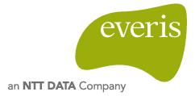
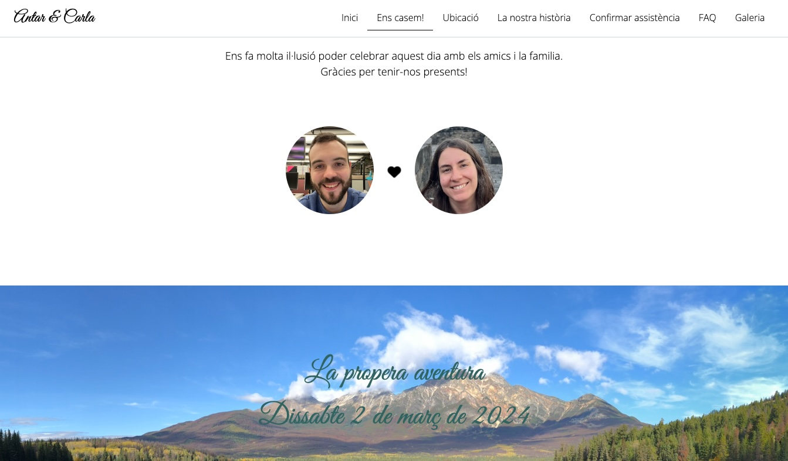
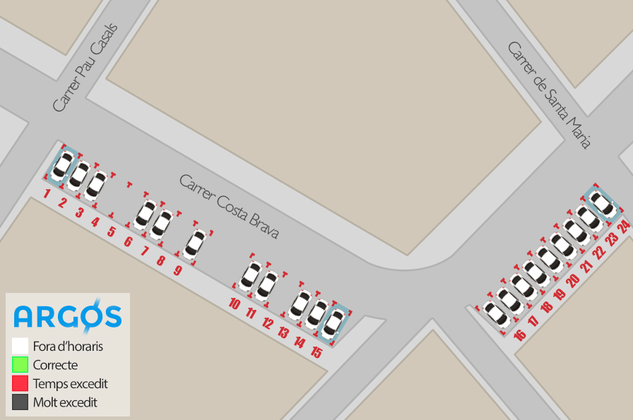
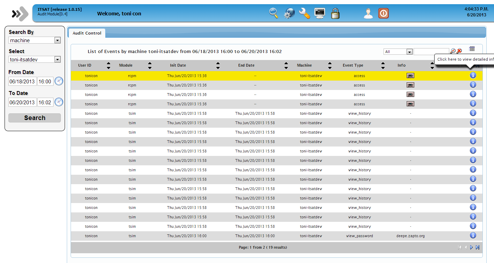
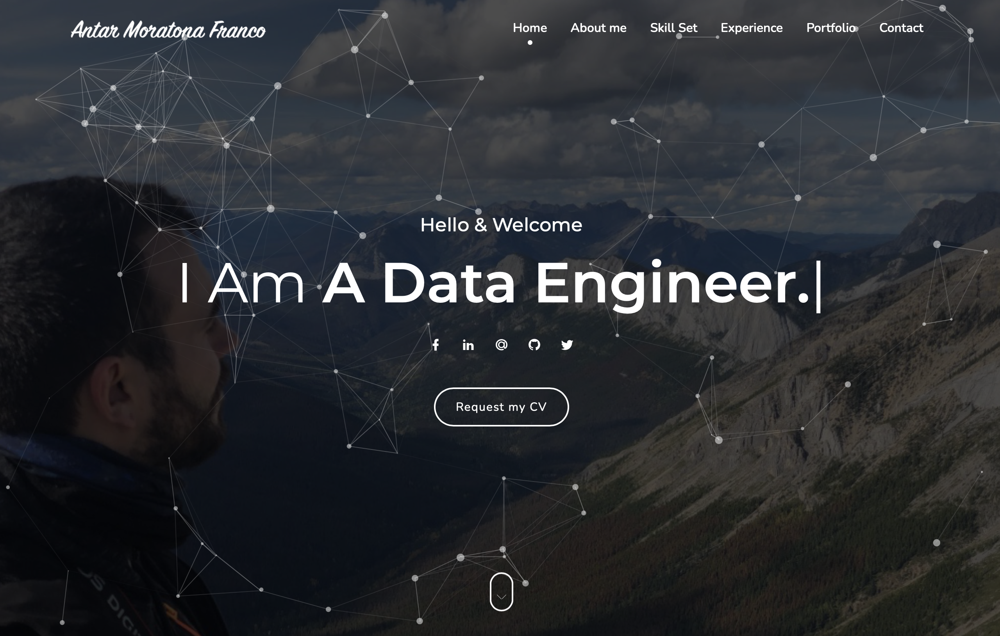

"I spent years building systems that move, transform and aggregate data at scale. Now I'm building the systems that understand it."
I'm a Senior AI/ML Engineer based in Barcelona with more than 14 years of experience building large-scale data platforms and distributed systems.
For most of my career, I specialized in Data Engineering; designing cloud-native architectures, analytics platforms, and data pipelines processing over 50 billion events every day. In 2025, I transitioned into AI/ML Engineering, where I now help build the infrastructure, tooling, and operational foundations that enable machine learning systems to move from experimentation to production.
Today my work focuses on MLOps, machine learning platforms, and decision systems at King's MLOps organization; contributing to systems that enable personalized player experiences across the full ML lifecycle.
Currently exploring
A decade building data platforms, now building the ML systems that run on top of them.
From data pipelines processing 50 billion daily events to the ML systems that make sense of them.

everis WORKUniversitat Politècnica de Catalunya. Full engineering program covering algorithms, systems, databases, networks, and software engineering fundamentals.
Production systems, platform infrastructure, and side projects — what I've built and shipped.
Internal MLOps initiative at King focused on enabling personalized player experiences through machine learning-driven decision systems. Built end-to-end infrastructure for contextual multi-armed bandits, experimentation workflows, and production monitoring at scale.

One-page site built for my wedding — guests could view event info, see our story, and confirm attendance. Every RSVP triggered an email to us via GCP.

Pioneer smart city project to detect real-time state of public parking in Vidreres. Built the full backend and frontend webapp, plus a REST API for the iOS app used by public agents.
Backend for an iOS app for Joventut Nacionalista de Catalunya — news, agenda, and direct contact. Built REST API, push-notification system, and admin panel using Amazon SNS.
iOS companion app for TV-show fans — database of 2,000+ American, British, and Spanish shows with search, genres, plot summaries, and episode lists. Reviewed by several Apple-focused publications.

Open-source web tool for managing and deploying changes across multiple machines from a single interface. Added git version control and coding standards to a previously manual vim-on-server workflow.
My first personal website — built with standard HTML/CSS/JS, Bootstrap, and jQuery. Simple, but it got me shipping to the web for the first time.

More dynamic and modern version of my personal site — built on top of an HTML5 template with heavy customisation of JavaScript, CSS animations, and third-party frameworks to make it feel truly personal.
This very site was entirely designed and built using AI — no manual Figma, no hand-written CSS from scratch. Prompted, iterated, and shipped through a conversational AI design workflow.
Interested in building intelligent systems at scale?
Interested in data platforms, AI infrastructure, MLOps, or building intelligent systems at scale? Whether you're hiring, collaborating, or just want to connect — let's talk.